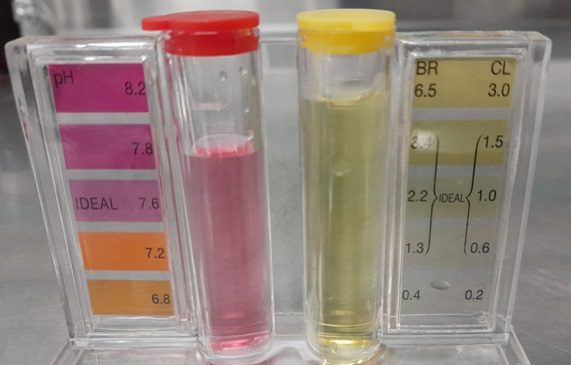
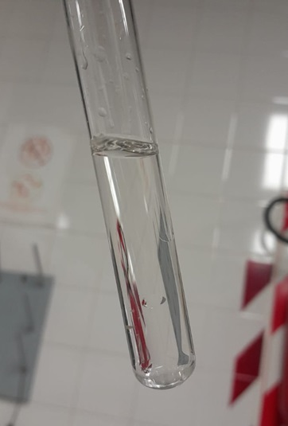
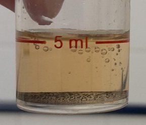
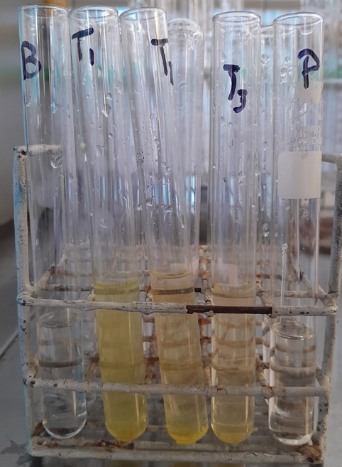

Cassette Reactivo
Prueba de Potabilidad de Agua
Recursos y Procedimientos
Materiales
- Vasos de Precipitado
- Varilla de vidrio
- Cuchara espátula analítica
- Balanza de Mesada
- Matraz aforado de 100,0 ml
- Embudo
- Pipetas Pasteur
- Tubos de ensayo
- Pipeta de 5,00 ml
- Propipeta
- Gradilla
- Jeringa de 10,0 ml.
Reactivos
- Nitrato de plomo (Pb(NO3)2).
- Ioduro de potasio (KI).
- Rojo fenol
- Ortotolidina
- Reactivo 1 AQUANAL®- Plus (Fe).
- Agua destilada
Procedimiento
Determinación del pH
En un tubo de ensayo se agrega 5,00 ml de agua de red. Después, se le agrega 4 gotas de indicador rojo fenol. Luego, se comparan los resultados con la tarjeta de colores.
Determinación del ión cloruro
En un tubo de ensayo se agrega 5,00 ml de agua de red. Después, se le agrega 4 gotas del reactivo ortotolidina. Luego, se comparan los resultados con la tarjeta de colores.
Determinación del ión ferroso
Se agrega 10,0 ml de agua de red a un tubo de ensayo. Después, agregar 4 gotas de reactivo 1 AQUANAL®- Plus (Fe) y esperar 3 minutos para luego comparar con tarjeta de colores.
Determinación del ión nitrato
Se agrega 5,00 ml de agua de red a un tubo de ensayo. Después, agregar una micro cuchara-espátula rasa de reactivo, tapar y agitar intensamente por un minuto. Luego, esperar 5 minutos para luego comparar con tarjeta de colores.
Determinación del ión plumboso
Se prepara una solución 0,3 % m/v de ioduro de potasio (KI), otra solución de concentración 4,25% m/v y otra de 2,12% m/v. Asimismo realizamos una dilución de 1/100 de nitrato plumboso (Pb(NO3)2).
En un tubo de ensayo se colocan 5,00 ml de agua destilada y 2,00 ml de ioduro de potasio 0,3% m/v (tubo blanco).
En otros tres tubos se colocan 5,00 ml de agua destilada, 2,00 ml de las tres soluciones de ioduro de potasio y 2,00 ml de nitrato plumboso (tubos testigo).
Por último, se coloca en un tubo 5,00 ml de agua de red y 2,00 ml de ioduro de potasio 0,3% mv (tubo desconocido).
